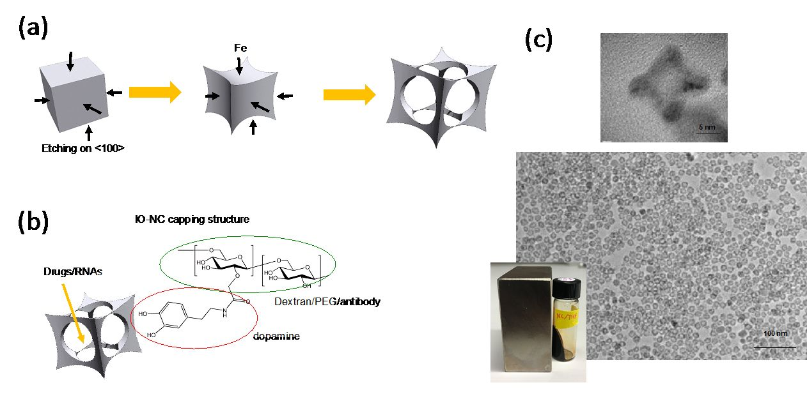
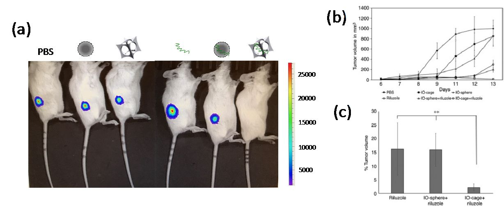
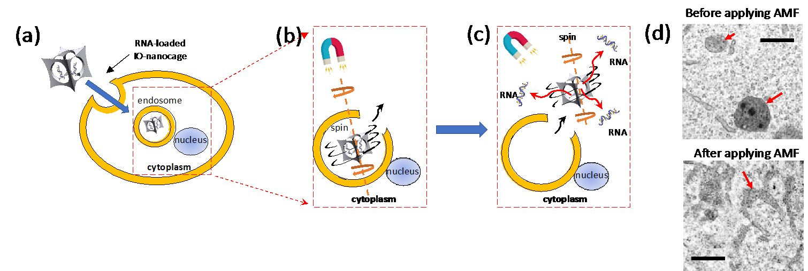

From peptide assemblies and shape-controlled nanoparticles to nanomedicine: the lab now develops nanoparticle drug and gene delivery, medical imaging and cancer diagnostics.
Background
From biomimetic materials to nanomedicine
After engineering a variety of peptide and protein assemblies (Chem. Soc. Rev. 2010, 39, 3499–3509), biomimetic autonomous motors (Nature Mater. 2012, 11, 1081–1085) and enzyme-mimicking peptides (J. Am. Chem. Soc. 2014, 136, 15893–15896), Dr. Hiroshi Matsui's nanotechnology lab developed various nanoparticles, including inorganic nanocages (Nature Commun. 2014, 5, 3870). The lab now focuses on medical applications of nanotechnology, including nanoparticle-based drug delivery systems, medical imaging and lab-on-a-chip cancer diagnostic devices. Two major research programs are described below.
Project 1
Drug and gene delivery with cage-shaped iron oxide nanoparticles
How do we target specific tissues, and how do we escape endosomes before degradation?
Much of the lab's recent activity has focused on a methodology to produce nanoparticles in complex shapes through galvanic exchange reactions (Nature Commun. 2014, 5, 3870). Iron oxide nanoparticles engineered with this technology into a cage shape (IO-nanocages) smaller than 20 nm can carry anticancer drugs inside their cavity (Fig. 1). Delivered by IO-nanocage carriers, the anticancer drug riluzole was about three times more cytotoxic to metastatic cancer cells than when delivered by solid spherical iron oxide nanoparticles, an effect of the characteristic cage shape (Nano Lett. 2016, 16, 7357–7363). The same hollowing approach was also applied to generate iron oxide nanotubes (RSC Adv. 2020, 10, 38617–38620).

Figure 1. (a) Illustration of the IO-nanocage fabrication process. Template cubic nanoparticles (MnO2 in this case) are transformed into iron oxide nanocages via galvanic reactions (left to right). (b) Structure of an IO-nanocage. Capping molecules such as dextran and PEG (hydrophilic shell) can be conjugated with moieties such as antibodies, dyes and exosomes. (c) High-resolution TEM (top) shows the cavity of a nanocage. Low-resolution TEM (middle) shows monodisperse production, critical for the quality control needed in medical applications. IO-nanocages are superparamagnetic (bottom), an important feature for an MRI contrast agent.
IO-nanocages can deliver riluzole passively to tumor sites: in xenograft mouse models of metastatic osteosarcoma, nanocage-delivered riluzole was the most effective treatment at reducing tumor size, because the shape and size of the nanocages are designed to enter the leaky blood vessels around tumors (Fig. 2) (Oncol. Rep. 2020, 43, 169–176).

Figure 2. (a) Bioluminescence (luciferase) imaging of osteosarcoma-xenograft mice. Loss of luciferase emission from the osteosarcoma was observed only in the mouse treated with riluzole-loaded nanocages (right). From left to right, mice were treated with PBS, conventional iron oxide nanospheres, IO-nanocages, riluzole, riluzole-loaded nanospheres and riluzole-loaded nanocages. (b) Tumor growth volume showed the largest reduction in mice treated with riluzole-loaded nanocages. (c) Percentage of tumor volume remaining at the end of the treatment period in (b).
For active targeting, IO-nanocages can be conjugated with organ-specific targeting proteins or exosomes. For example, when IO-nanocages were coated with lung-tropic exosomes and related proteins, higher accumulation of the nanocages was observed in the lungs of tumor-bearing mice. This builds on Dr. Matsui and colleagues' earlier studies of the structural and mechanical properties of exosomes (Nature Cell Biol. 2018, 20, 332–343). Such a delivery platform could be applied to treat primary and metastatic tumors with reduced side effects.
Because cage-shaped nanoparticles have a cavity, they could also serve as universal carriers for newly designed drugs and therapeutic RNAs or DNAs. Magnetic IO-nanocages were found to undergo Brownian motion in alternating magnetic fields (AMF), and this motion helps them escape endosomes and release their genetic cargo inside cells (Fig. 3) (Nano Lett. 2022, 22, 8852–8859). Escaping the endosome into the cytoplasm or nucleus before lysosomal degradation is one of the major hurdles for therapeutic efficacy. IO-nanocages could therefore support future gene therapies, and delivery of Cas9–gRNA with IO-nanocages is under development. Iron oxide nanocages can also act as contrast agents for magnetic resonance imaging (MRI), making it possible to monitor drug delivery in vivo.

Figure 3. Mechanism of gene delivery by iron oxide nanocages in an alternating magnetic field (AMF) via efficient endosome escape. (a) RNA-loaded IO-nanocages enter cells via endocytosis. (b) The AMF induces Brownian (spinning) motion of the IO-nanocages, leading to endosome escape. (c) The IO-nanocages then enter the cytoplasm, and RNAs released from them are delivered to the cytoplasm and/or nucleus for therapeutic effect. (d) TEM images of endosomes in B16-F10 cells before (top) and after (bottom) applying the AMF (335 kHz). Before, endosomes contain IO-nanocages; after AMF treatment, the endosomes are torn, letting the IO-nanocages escape to the cytoplasm as depicted in (c).
The nanocage platform also supports collaborative work on RNA-based cancer therapeutics, for example nanocage delivery of engineered RNA constructs that target c-MYC in triple-negative breast cancer (Cancers 2024, 16, 2663) and ERBB2 in drug-resistant non-small cell lung cancer (Front. Oncol. 2024, 14, 1344852), and magnetic delivery of mGluR5 siRNA to osteosarcoma cells (Int. J. Mol. Sci. 2022, 23, 7944).
Project 2
Amplifying therapeutic exosome and extracellular vesicle (EV) generation
Exosomes and EVs, secreted by many types of cells, play a major role in intercellular communication and in the functional changes of the cells that receive them. Their functions and organ-specific targeting depend on the biomolecules they package (proteins, RNAs and DNAs), their mechanical properties and their size. EVs interact with target cells through cell-surface receptors, followed by endosomal uptake and cargo release. This ability to transport molecules and to target specific cells has led to diverse therapeutic applications of EVs in cancer, inflammation, cardiovascular disease, wound healing, brain injury and hypertension, making them strong candidates for new pharmaceuticals.
To develop EVs into practical therapeutic agents, a simple way to boost EV generation is needed, and none is currently available. The lab has introduced an approach that uses intracellular self-assembly (polymerization) of synthetic peptides to amplify EV generation. Simply adding short peptides to therapeutic cells greatly enhanced EV production, as enzymes cleave a specific moiety of the peptide and induce its polymerization. Cells take up the peptide without special treatment. The self-assembled peptides form an artificial cytoskeleton, which can be visualized through a fluorescent tag on the peptide that emits light only once the peptide has polymerized. Peptide self-assembly may alter signaling pathways, possibly through cellular stress, and trigger increased EV production; the detailed amplification mechanism is still under investigation.
The effect has been confirmed in five cell lines. For example, MDA-MB-231 cells released ten times more exosomes by number when the parent cells were treated with the self-assembling peptide.
Current interests
Research interests
Nanoparticle-based drug delivery and medical imaging